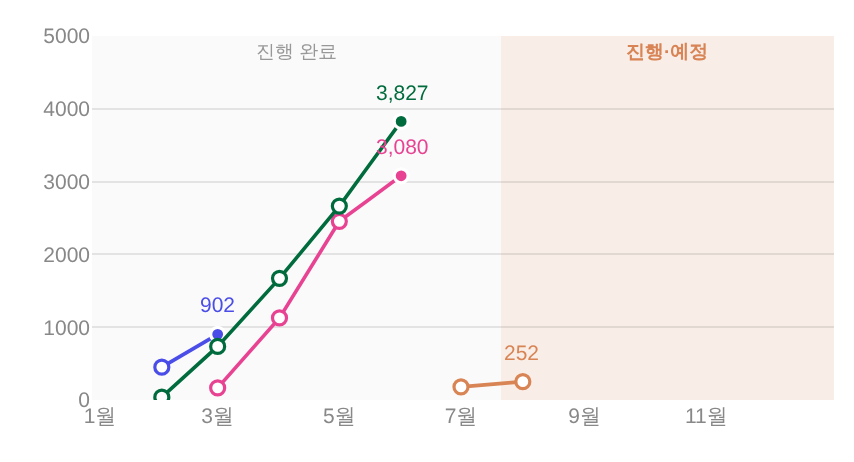

기획 전시 = 꺾은선 롤백(면 철거) + 로그인 새로고침 부팅 중단 사고 수정
지시(운영자 260805) 「이야 음영 표기 예술이네, 내가 그 직각 차트라고 하지 않았나? 그리고 누적도 안되는거같은데」 → 「꺾은선으로 롤백하고 마무리해」 ·
대상 = _bizDrawExhibMonthly(면 철거) · _ctDefs 신설(부팅 사고) · 화면 = tools/scratch/shot_exmonthly.mjs 1920×1080 · 실API·PII 미접촉.
1. 롤백 전 · 후
전 = 직전 머지(#664 · 고유색 50% 면) · 후 = 면 철거, 꺾은선 복귀. 점·선·라벨·툴팁 규칙은 전부 그대로.
전 — 선 아래 고유색 50% 면(같은 바닥에서 겹쳐 그림 = 누적 아님 · 직각 아님)

후 — 면 0 · 꺾은선만(운영자 「꺾은선으로 롤백」)

- DOM 실측: fills 0(면 전건 철거) · lines 4 · points 13 · 꼭자락 라벨 4(902 · 3,827 · 3,080 · 252) 유지.
- 유지되는 것: 종료 월(최종) 한 점만 채움 · 나머지 빈 동그라미 · 숨 쉬는 SUM 주황 · 누계 y축 · 툴팁 문구.
- 코드에 철거 사유와 재도입 조건을 남겼다 — 되살릴 땐 「시작일순 스택 + 직각(hv 스텝)」 축으로만, 같은 바닥 겹치기 재현 금지.
2. ⚠ 도중에 발견·수정한 사고 — 로그인 상태 새로고침 시 앱이 안 뜬다
이번 작업과 무관하게 이미 main에 들어가 있던 버그. 촬영이 계속 실패해 추적하다 잡았다.
| 항목 | 내용 |
|---|---|
| 증상 | TypeError: Cannot read properties of undefined (reading 'map') → initApp 중단 → 대시보드가 아예 렌더되지 않음 |
| 발화 조건 | 로그인 상태에서 새로고침·재방문(sessionStorage 세션 복귀 경로). 새 로그인은 파싱이 끝난 뒤 initApp이 돌아 멀쩡 → 눈에 잘 안 띈다 |
| 원인 | index.html은 L2750~L32426이 한 script 블록. 그 블록의 L4182 부트가 initApp→buildNav→모바일 아코디언 즉시 빌드(L5050)→_contentMenuBuild를 L24444보다 2만 줄 앞서 부른다. 그 시점 var _CT_IMG 등은 hoist만 되고 값이 undefined → undefined.map |
| 유입 | 260805 3차(d07746a · PR #666)가 _CT_ITEM/_CT_HOV/_CT_HD/_CT_SEC/_CT_IMG/_CT_VID 6개를 그 자리에 신설. 그 전엔 문자열이 인라인이라 부트 의존이 없었다 |
| 고침 | 값은 문맥 자리에 그대로 두고 hoist되는 _ctDefs()로 감싸 첫 사용 때 보장(함수 선언은 순서 무관) · 진입점 5곳에서 호출. ⚠ 새 _CT_* 상수는 반드시 _ctDefs() 안에 — 밖에 두면 같은 사고 재발(주석 명문) |
| 실측 | 순수 origin/main + 세션 복귀 시뮬(QA 무관) = 보드 미렌더 · 수정본 = pageerror 0 · 보드 렌더 ✓ |
왜 여태 게이트가 못 잡았나.
check_design·smoke:layout·smoke는 각각 색·레이아웃·로그인 화면을 본다 —
「로그인된 상태로 재진입」 경로를 실제로 밟는 검사가 없었다. 이번 촬영 하네스가 그 경로를 밟아 우연히 걸렸다. 상시 검사로 승격할지는 운영자 판단(게이트 신설 = 규칙 축).3. 게이트
check_design.py✓ raw hex 1578/1578 무변 · 신규 색·토큰·:root0npm run check✓ ·npm run smoke✓ ·npm run smoke:layout✓- 실렌더 pageerror 0 · 전시 면 0 · 선 4 · 점 13 · 꼭자락 라벨 4